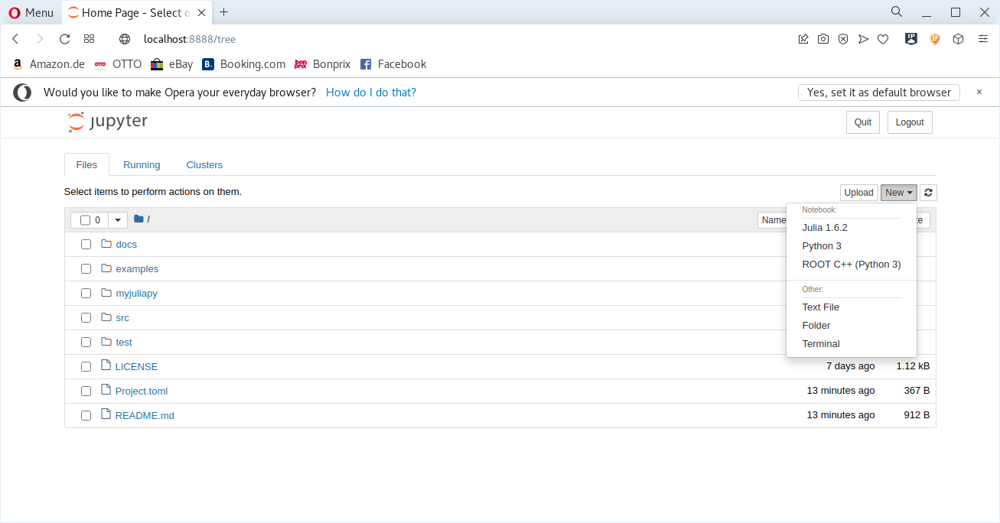
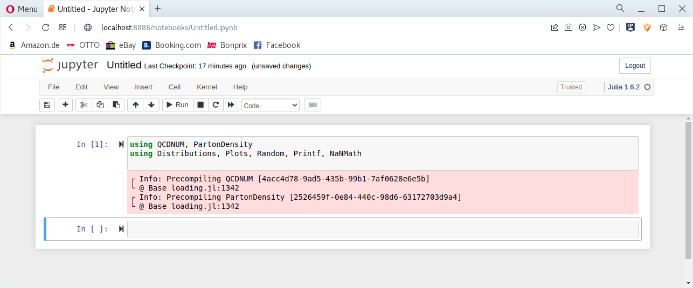

Use QCDNUM in Jupyter notebook
The simplest way to use the QCDNUM in the Jupyter notebook after the installation is
- To create a virtual python environment with an ad-hoc name
myjuliav
[user@host workdirectory]$ python -m venv myjuliav- Activate the virtual environment
[user@host workdirectory]$ source myjuliav/bin/activate.sh- Install the Jupyter notebook package using
pip
(myjuliav) [user@host workdirectory]$ python -m pip install notebook- Launch the notebook
(myjuliav) [user@host workdirectory]$ jupyter notebookand follow the instructions that will be shown on the screen.
In the notebook
- Create a new notebook

- Start to use QCDNUM
